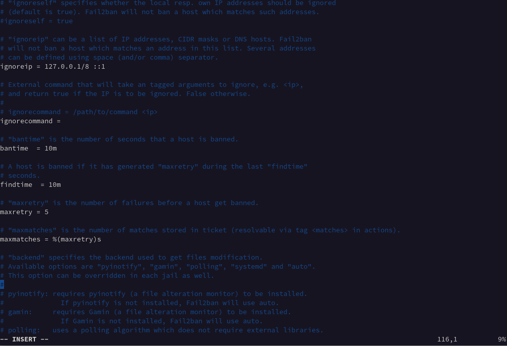

22.19. Stopping SSH brute force attacks with Fail2Ban
An SSH brute force attack involves repeated trials of user name and password combinations until the attacker gains access to the remote server. The attacker uses automated tools that test various user name and password combinations to compromise a server.
You can use Fail2Ban software to limit intrusion attempts. Fail2Ban scans the system logs to detect attacks and trigger an action, such as blocking the IPs via the firewall. Fail2Ban is used only to protect services that require a user name and password authentication.
22.19.1. What is Fail2Ban?
Fail2Ban scans the log files in /var/log/apache/error_log and bans IPs that indicate malicious signs, such as too many password attempts, etc.
You can then use Fail2Ban to update firewall rules to reject the IP addresses for
a specified amount of time.
Fail2Ban comes with filters for various services, such as Apache, SSH, Courier, etc. You can use Fail2Ban to minimize the rate of incorrect authentication attempts.
22.19.2. Using Fail2Ban to stop an SSH brute force attack
You can install and configure Fail2Ban to protect the server against SSH brute force attacks.
-
To install Fail2Ban, execute:
#sudo zypper -n in fail2ban firewalld -
When you install Fail2Ban, a default configuration file
jail.confis also installed. This file gets overwritten when you upgrade Fail2Ban. To retain any customizations you make to the file, you can add the modifications to a file called jail.local. Fail2Ban automatically reads both files.#cp /etc/fail2ban/jail.conf /etc/fail2ban/jail.local -
Open the file in your editor.
vi /etc/fail2ban/jail.local -
Take a look at the four settings that you need to know about.

Figure 22.1. jail.localfile settings- ignoreip
-
A list of whitelisted IPs that are never banned. The local host IP address 127.0.0.1 is in the list by default, along with the IPv6 equivalent ::1. You can use this setting to add a list of IP addresses that you know should not be banned.
- bantime
-
The duration in minutes for which an IP address is banned. When you do not enter a value ending in m or h, it is treated as seconds. If you enter a value of -1, an IP address is permanently banned.
- findtime
-
The period of time within which too many failed connection attempts result in an IP being banned.
- maxretry
-
The limit for the number of failed attempts.
ⓘNoteIf a connection from the same IP address makes maxretry failed connection attempts within the findtime period, they are banned for the duration of the bantime. The only exceptions are the IP addresses in the ignoreip list.
Fail2Ban supports different types of jails, and each jail has different settings for the connection types.
-
You can use the Fail2Ban service with the following:
To enable:
# systemctl enable fail2banTo start:
# systemctl start fail2banTo check the service status:
# systemctl status fail2ban.service☝ImportantYou must restart Fail2Ban each time you make a configuration change.